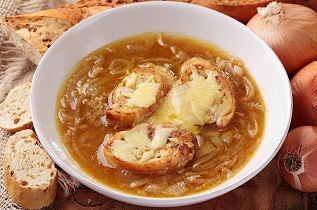
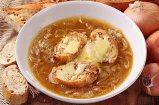

Historia
Si por lo general la sopa de cebolla se considera originaria de Francia, la realidad es que se le tiene registro histórico en muchos países europeos. Se tiene conocimiento de recetas de sopa de cebolla desde la Edad Media, igual que la sopa de ajo. En un inicio era considerada como un plato pobre que comían quienes no tenían otra cosa con qué alimentarse. La moda de la sopa de cebolla y su inclusión de lleno en la gastronomía francesa se dio en el siglo XIX cuando se le servía en el mercado parisino de Les Halles a los noctámbulos que regresaban de una noche de fiesta. Hoy proponemos la receta tradicional de la sopa de cebolla que preparamos con vino blanco, aunque tenemos otras versiones como la sopa de cebolla dulce con queso Stilton. Algunas personas prefieren usar brandy, jerez o no agregarle ningún ingrediente alcohólico. Sin embargo consideramos que el vino blanco le aporta el mejor sabor una vez servida con el pan tostado y el queso Emmenthal.
Ingredientes
- 1 kg. de cebollas
- 2 l. de caldo de carne
- 100 gr. de mantequilla
- 1 cucharada de harina
- 100 gr. de queso emmental suizo o gruyére rallado
- Pan tostado a rebanadas
- Tomillo
- 1 hoja de laurel
- Pimienta
Proceso
- Pelar y partir las cebollas en rodajas finas.
- Rehogarlas con la mantequilla, sal y pimienta a fuego lento hasta que estén transparentes sin dorarse.
- Añadir la harina sin dejar de remover.
- Ponerlo en la cazuela con el caldo, el tomillo y el laurel.
- Dejar cocer a fuego lento durante unos 15 minutos.
- Poner las rebanadas de pan encima, espolvorear el queso y gratinar al horno.